El punto construido |
|
El punto por suma de dos vectores |
|
Es un punto que se puede desplazar libremente sobre la figura.
El punto libre de coordenadas enteras
: 
Es un punto que se puede desplazar libremente sobre la figura pero cuyos coordenadas permanecen enteras. Es posible limitar las posiciones posibles horizontal y verticalmente..
Es un punto que ha sido definido como intersección de dos objetos o como imagen de otro punto en una transformación.
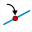
Es un punto que queda vinculado a un objeto. Puede ser desplazado pero debe permanecer sobre el objeto.
Un punto se puede ligar a una recta, una semirrecta, un segmento, una circunferencia, un polígono, una poligonal, un arco de circunferencia o un lugar de puntos conectados.
Se puede transformar un punto libre en punto ligado con la herramienta
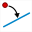
.Se puede transformar un punto ligado en punto libre con la herramienta  .
.
El punto por suma de dos vectores : 
Es un punto que es la imagen de otro por una traslación cuyo vector es la suma de dos vectores.
El punto por producto de un vector por un número
: 
Es un punto que es la imagen de otro por una traslación cuyo vector es el producto de un vector por un número.
El punto por coordenadas en un referencial
: 
Es un punto definido por sus coordenadas en un referencial.
El punto interior a un polígono o une circunferencia :
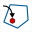
Este es un punto que se crea haciendo clic en el interior de un polígono o una circunferencia.
Se puede capturar, pero permanecerá dentro del polígono o circunferencia.
Si el polígono no es convexo, puede suceder que al deformar el punto "salte" sobre uno de los bordes.
Se puede transformar un punto interior en un punto libre utilizando la herramienta de supresión de ligadura punto-objeto.
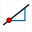
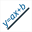

Se puede crear una recta por dos puntos, paralela, perpendicular, bisectriz, mediatriz, recta horizontal, recta vertical, recta definida por un punto y su coeficiente director en un referencial o por una ecuación de recta en un referencial o recta de regresión lineal.
Se puede también crear la imagen de una recta por una transformación (excepto la inversión).
Un segmento se crea designando sus dos extremos.
Se puede también crear la imagen de un segmento por una transformación (excepto la inversión)..
Se crea una circunferencia cliqueando sobre su centro y un punto o cliqueando sobre su centro y dando su radio.
Se puede también crear la imagen de una circunferencia por una transformación (excepto la inversión).
Se crea una semirrecta cliqueando sobre el origen y sobre otro punto..
Se puede también crear la imagen de una semirrecta por una transformación (excepto la inversión).
Se crea un vector cliqueando sobre su origen luego sobre su extremo.
No se trata de un verdadero vector en el sentido matemático sino de un segmento provisto de una flecha. Se puede entonces vincular un punto a un vector.
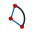

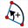


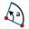

Se crea un arco de circunferencia:
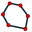
Se crea un polígono cliqueando sobre sus vértices luego cliqueando con el botón rojo STOP cuando se ha designado el último vértice (se puede también cliquear nuevamente sobre el primer vértice).
Se puede también crear la imagen de un arco por una transformación (excepto la inversión)
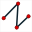
Se crea una poligonal cliqueando sobre sus vértices luego cliqueando con el botón derecho cuando se ha designado el último vértice.
Se puede también crear la imagen de una poligonal por una transformación (excepto la inversión).
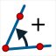
Es posible crear:


Una marca de segmento debe asociarse a un segmento. Se la crea cliqueando sobre el segmento.
La paleta de estilo de marca permite elegir la marca creada.
La marca del segmento se crea en el estilo de la traza activa.
El comentario :

Un comentario es una visualización de texto sobre la figura.
El comentario puede ser libre () o ligado a un punto ().
Puede contener referencias a cálculos o variables y permitir así la visualización de valores dinámicos.
Puede también contener caracteres griegos o especiales.
Puede tapar o no los objetos que el recubre y que lo preceden.
Puede ser encuadrado o no (con o sin efecto de relieve).
Varios tamaños de caracteres están disponibles..
Se puede elegir el tipo de alineación ( a izquierda,
a izquierda,
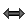
centrada o a la derecha) y la alineación vertical (
a la derecha) y la alineación vertical (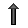
arriba,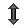
centrada o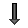
abajo).Para que los caracteres siguientes se escriban en cursiva, entrar los caracteres #I.
Para que los caracteres siguientes se escriban en negrita, entrar los caracteres #G.
Para que los caracteres siguientes se escriban en subrayado, entrar los caracteres #U.
Los modos cursiva, negrita y subrayado pueden ser combinados. Por ejemplo #G#U devolverá el texto en negrita y subrayado.
Para volver de nuevo a una visualización de fuente normal, entrar los caracteres #N.
Para escribir en exponente chaine utilice #H(chaine)
Para escribir en subíndice chaine utilice #L(chaine)
Para transformar una visualización de texto en código LaTeX, es posible encuadrando ese código entre dos caracteres $
Se puede ligar un comentario de texto libre a un punto con el icono .
.
Se puede dejar libre un comentario de texto ligado a un punto con el icono
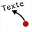
.
La visualización de un valor : 
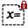
Permite indicar un valor sobre la figura..
La visualización de valor puede ser libre () o ligada a un punto ().
Se puede especificar:
el número de decimales,
un encabezamiento (que se mostrará antes del valor),
una post cadena (que se indicará después del valor).
Puede borrar o no los objetos que recubre y que lo preceden.
Puede estar encuadrada o no (con o sin efecto de relieve).
Se puede elegir el tipo de alineación ( a izquierda, centrada o a la derecha) y la alineación vertical ( arriba, centrada o abajo).
Se puede ligar a un punto una visualización de valor libre con el icono .
Se puede hacer libre una visualización de valor ligada a un punto con el icono .
Permite incorporar un texto matemático que utiliza la sintaxis LaTeX. Es posible insertar de manera dinámica el resultado de un cálculo real o complejo o de una variable..
La visualización LaTeX puede ser libre ( ) o ligada a un punto (
) o ligada a un punto ( ).
).
Puede contener referencias a cálculos o variables y permitir así la visualización de valores dinámicos.
Puede tapar o no los objetos que recubre y que lo preceden.
Puede ser encuadrado o no (con o sin efecto de relieve).
Varios tamaños de caracteres están disponibles.
Se puede elegir el tipo de alineación ( a izquierda, centrada o a la derecha) y la alineación vertical ( arriba, centrada o abajo).
Los botones permiten insertar los códigos LaTeX más usuales.
Se puede ligar una visualización LaTeX libre a un punto con el icono .
Se puede dejar libre una visualización LaTeX ligada a un punto con el icono .
También se puede insertar en una visualización LaTeX el contenido de una visualización LaTeX previamente definido con el código LaTeX \Lat{valtag}, donde valtag es la etiqueta que se asignó previamente a la visualización LaTeX anterior.
Por ejemplo, se puede crear una primera visualización LaTeX con el siguiente código LaTeX: \srqt{2}.
Para ello utilice la herramienta de protocolo para asignarle la siguiente etiqueta: lat1
Luego cree otra visualización cuyo código LaTeX sea \Lat{lat1} + 3.
Todo sucederá como si la segunda visualización LaTeX tuviera el código \sqrt{2} + 3
Permite incorporar un campo de edición para la fórmula de un cálculo o una función (real o compleja).
Cuando se crea un editor de fórmula, primero elija su ubicación en la figura, y, a continuación, un cuadro de diálogo que se abre, permite seleccionar de una lista el cálculo o la función con la que está asociada y el tamaño. Puede elegir un encabezado que aparecerá delante del campo de edición. Si este encabezado está vacío, se mostrará el nombre del cálculo delante seguido del signo de igualdad (por ejemplo para una función f de dos variables será mostrado f(x,y) =).
Si deja marcada la casilla Visualización de la fórmula en LaTeX, a fórmula introducida en el campo de edición será restaurada en forma natural en LaTeX a la derecha del campo de edición.
Sobre el cuadro Visualización de la fórmula en LaTeX se puede especificar un código en el campo Pre-código LaTeX que se insertará delante del código LaTeX correspondiente a la fórmula ingresada en el editor. También en este caso, si la fórmula de Visualización en tiempo real de la fórmula está marcada, la fórmula se mostrará cuando el usuario ingrese su fórmula en el editor. De lo contrario, solo se mostrará cuando el usuario haya validado presionando la tecla Enter.
El lugar de puntos conectados : 
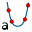
Se obtiene uniendo las posiciones posibles de un punto por segmentos.
Estas posiciones pueden pueden se generadas:
ya sea por las posiciones de un punto ligado a un objeto ().
ya sea por los valores de una variable ().
Se puede especificar el número de puntos para obtener el lugar e indicar si el lugar es cerrado o no).
El lugar de puntos no conectados :
Se obtiene trazando las posiciones posibles de un punto.
Estas posiciones pueden ser generadas:
ya sea por las posiciones de un punto ligado a un objeto ( ).
).
ya sea por los valores de una variable ( ).
).
Se puede especificar el número de puntos para obtener el lugar e indicar si el lugar es cerrado o no)
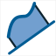
Una superficie se obtiene rellenando una parte de la figura.
La superficie se crea en el estilo de relleno activo y el color activo.
: Creación de un superficie delimitada por un lugar de puntos y una recta.
 : Creación de un superficie delimitada por un polígono, una circunferencia, un arco de circunferencia o un lugar de puntos conectados cerrado.
: Creación de un superficie delimitada por un polígono, una circunferencia, un arco de circunferencia o un lugar de puntos conectados cerrado.
: Creación de un superficie delimitada por dos lugares de puntos.
 : Creación de un superficie delimitada por un lugar de puntos y dos puntos.
: Creación de un superficie delimitada por un lugar de puntos y dos puntos.
Un semiplano es trazado en el estilo de relleno activo y el color activo.
Se lo crea cliqueando sobre una recta (el borde) y sobre un punto interior al semiplano.
La gráfica de una sucesión recurrente real :
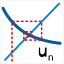
Se crea en el estilo de trazo activo y el color activo.
Se trata del gráfico "en tela de araña" de una sucesión recurrente real definida por su primer término y una relación de la forma u(n+1) = f[u(n)] dónde f es una función numérica real.
Se pueden o no conectar los puntos al eje de las abscisas.
La gráfica de una sucesión recurrente compleja
: 
Se crea en el estilo de trazo activo y el color activo.
Es la gráfica de una sucesión recurrente compleja definida por su primer término y una relación de la forma u(n+1) = f[u(n)] dónde f es una función numérica compleja.
Cada término de la sucesión es señalado por un punto (trazado en el estilo de punto activo) y es conectado al siguiente por un segmento (trazado en el color y el estilo de trazo activos).
La visualización de una imagen :

Ella puede ser libre () o ligada a un punto ( ).
).
Sirve para visualizar en la figura una imagen contenida en un archivo.
Esta visualización puede ocultar o no los objetos que recubre y que le preceden.
Puede ser recuadrada o no (con o sin efecto de relieve).
Se puede elegir el tipo de alineación ( a izquierda, centrada o a la derecha) y la alineación vertical ( arriba, centrada o abajo).
El lugar de objetos es un conjunto de trazas dejadas por un objeto.
Puede ser generado por un punto ligado a un objeto o por una variable.
Se puede crear con los iconos  (lugar de objetos generado por punto ligado) y (lugar de objetos generado por variable).
(lugar de objetos generado por punto ligado) y (lugar de objetos generado por variable).
El número N de trazas que forman el lugar se limita a 2000. Este número puede ser dinámico.
Cuando el lugar de objetos es generado por un punto ligado a un objeto, las trazas que forman el lugar de objetos se calculan de la siguiente manera: Se simulan N posiciones sucesivas del punto ligado sobre el objeto al cual está ligado. Para cada una de esas posiciones se deja una traza para el objeto elegido (un segmento por ejemplo).
El principio es el mismo cuando el lugar de objetos está generado por una variable, se procede de la misma forma simulando N valores sucesivos de la variable incluidos entre su valor mínimo y su valor máximo.
Para designar un lugar de objetos basta con cliquear en la proximidad de una de las trazas que lo componen.
A tener en cuenta:
Para cambiar el color de un lugar de objetos, es necesario utilizar la herramienta paleta ( ).
).
Un lugar de objetos generado por un objeto de tipo lineal no tiene estilo de trazado que le sea propio.
Para cambiar el estilo de trazo de un lugar de objeto, es necesario cambiar el estilo de trazo del objeto cuyas trazas generan el lugar de objetos.
Es posible crear lugares de lugares de objetos pero sólo se trazarán si el número total de objetos no sobrepasa 5000.
Use el icono  en la parte inferior de la barra de herramientas izquierda.
en la parte inferior de la barra de herramientas izquierda.
En algunos casos, un objeto puede ser ocultado parcialmente por objetos que se definieron después de él.
Se puede entonces crear un duplicado de ese objeto cuya única función será redibujar este objeto.
No se puede crear más que un único duplicado para un objeto dado.
Use el icono en la parte inferior de la barra de herramientas izquierda.
Es un objeto que juega exactamente el mismo papel que un objeto del mismo tipo precedentemente definido.
Este tipo de objeto es especialmente útil para las construcciones iterativas y recursivas aparecidas con la versión 4.8 de MathGraph32.
Es posible crear un clon de los objetos siguientes: punto, recta, semirrecta, segmento y circunferencia.